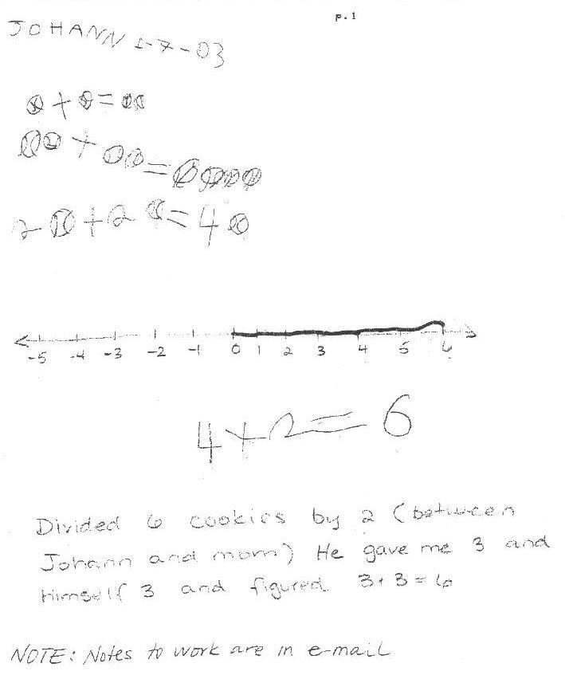
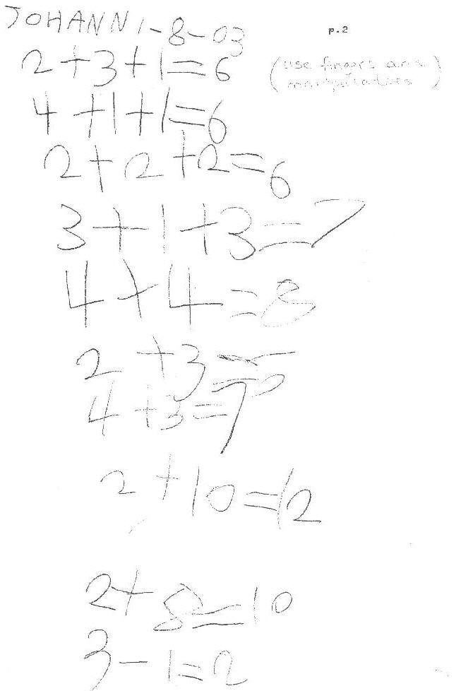
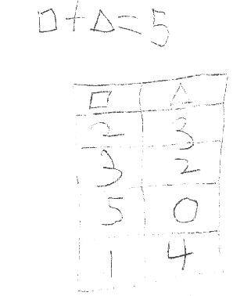
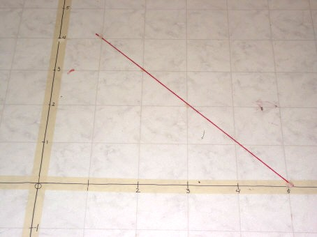
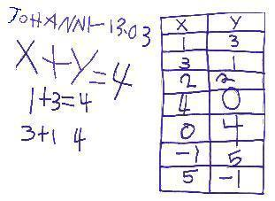

Johann, 4 years old, with Mom, works with Don from California. When he was 5 they came to Champaign!
January 6 & 7, 2003
Via telephone, Don and Johann's Mom Svava, talked about how to proceed in developing a program for him. Svava purchased Don's book "Calculus By and For Young People (ages 7, yes 7 and up)" from amazon.com, his book "Calculus By and For Young People - Worksheets" from Don, and his 2 videotapes from Rainbow resource Center. She would like Johann to start working with Don. It turns out that Johann can count to 200, can write numerals to 10 and count back from 10 to zero, cannot add as such. He went to Kumon at 3 years old. These were some agreed upon things to start with:
Do some addition with counters, then he could graph + D = 4 on the 1/2" graph paper in the appendix.
Adding ones and tens using squares (10x10) and strips(1x10) and 1x1 squares- Don sent some of these.
Use language two-ty one for 21. When one says seventeen, the seven comes first, so young children think they should write it 71. It's much less confusing to say one-ty seven for 17. And "one twoth" not "one half" for 1/2. How do you read 1/4?
When counting down, they could go into negatives. They live in the mountains in CA and have snow, so negatives are on the outdoor thermometer.
In doing the cookie-sharing in Ch. 2, use 3x5 blank cards and Johann can tear them or use scissors in sharing. Mom should let him decide how he wants to do the sharing.
Johann's work from Jan. 7, 2003:

Johann's work from Jan. 8, 2003

Wed, 8 Jan 2003 17:23
Svava's email to Don. Subject: Johann's first mathlessons
Dear Don,
Here is the report for the first two days of our math
lessons. I will fax his sheets to you for the first week or so, or until I
get my equipment up. [see above]
In the summer we had a daily schedule on our refrigerator
in which he had to do crawling 10 times per day. He was really good at
adding and subtracting throughout the day how many rounds were left or completed
and he put an X every time he completed a round. This was very effortless
for him and I asked him all the time, "ok Johann you've done so many trips,
now how many do you have left". He would always answer me even if he
didn't have the schedule in front of him. Now sitting down with him is a
whole different story. He just is taking his time getting the concept of
addition and when I added subtraction this morning thinking it's really the same
thing and the two should be done at the same time he was really confused.
We will continue to play the SUM SWAMP addition/subtraction game we have played
in the past but now we will play it more consistently, for now every day.
Yesterday I may have given him too much - but what is too much??? For
addition we drew a number line and worked with it for a while and then we also
used manipulatives. His concept is much better in an informal setting than
when sitting down with numbers and signs. He understood the ball concept
pretty well. I told him it's better to just write the number in front of
the balls to represent the quantity and he understood that quite well (instead
of drawing up many balls).
The cookies I asked him to divide 6 between me and him and he gave me 2 and himself 2 and he wanted to do nothing with the rest, well finally he figured it out and today he divided 7 cookies between the two of us without a problem. He tore the paper in half and I told him it's called one tooth. Today I started with doing addition. We used his fingers, manipulatives and the number line.
When I moved to doing square + triangle = 4 he was totally
lost. I wonder if addition and subtraction doesn't have to click completely
before he can do graphing? Or am I teaching it wrong? Or should I just show him
so he can fill in the axis? I feel a little lost at how I can make the
concept click with him, I feel there has to be a way without just memorizing,
some say it's developmental and perhaps he hasn't reached that stage yet.
But I feel very confident that he is ready because of the chart we did in the
summer, but how can I help him make
sense of addition and subtraction so it's effortless?
Sorry this is so long but in the beginning I think it's
rather important to know where his mind is. Perhaps I need to find ways to
teach him math where he can involve his whole body instead of sitting down
looking at a piece of paper. Perhaps there are ways I can organize (it
would have to be organized because I'm too scatterbrained for anything else) it
into our daily activities and I'm thinking about it.
What are your thoughts on all this? Perhaps It's just normal starting stress I'm going through? Who knows. Thanks for all that you do, I know we chose the best place to go for help.
Best wishes, Svava
P.S. I bought the tower puzzle, the wooden geoboard
(the 10", they didn't have the 8"), colored rubber bands, cuisenaire
rods starter kit, the 1000 1cm3, and a numberline track that fits the rods (with
zero being in the middle). I also called the shell company and ordered 1/2
Nautilus shell.
Jan. 8, 2003 10 pm, Don's email to Svava
Dear Svava,
It's getting late for me, this being my first week back with the kids... i need
more time to read your email. Two things pop out right away..
1. Could there be a place on a floor where you could make the axes (masking
tape?) and he could walk to 3,1 and put something there (maybe a washer?
cookie?).
2. How about the language "share 6 cookies between 2 people". I know
this is really a way to look at division.
3. The pen or pencil used for adding 4+2=6 on the number line was much darker
and better for reproduction on a fax or scanner. A black colored pencil?
4. I liked what you did with the balls!
5. his writing numerals is very good.
6. Look at what I did with Tessa at five..at http://www.mathman.biz/html/tlc1+1.html
You read the left side , like 1+1= one plus one equals what? one ten plus
one ten = what? and so on. I bet he'll love doing 1 million + 1 million= ? and 1
sine x + 1 sine x = ?
7. Have him make a soma set with the 1cm3 . See Olivia's
drawing of the 7 pieces. If this is not clear, I'll send you a set for him
to reproduce by gluing the cm cubes to make the 7 pieces.
You're doing fine, Svava. Go to a different thing if he is confused or doesn't
care to do it. Don't force it..use a light touch..
Jan. 10, 2003 11:26 am, Don's email to Svava
Hi Svava,
Just a note to point you to what is possible on the geoboard.
Please take a look at Johann's
page and please let me know if I need to change something. I added our email
correspondence and his pages.
Keep up the fine work with Johann.
Sincerely, Don
Jan. 10, 2003 2 pm, Svava sent a fax to Don with:
"On 1-09 Johann and Mom played SumSwamp. SumSwamp is an addition/subtraction game and he did quite well. We haven't played it in a while but this time something has started click and his understanding is better.
On 1-10 We used plastic manipulative bears to put inside the square and the triangle to represent the different values for each [pair of numbers]. We did make a graph but we used the squares in our kitchen floor and masking tape to represent the axes. Johann walked the axes and also used his fingers (we did both) and then he drew a line thru his points (which he marked with a little tape) using yarn that he taped down. For now this works better than sitting down at a table."Jan. 10, 2003, 8:50 pm, Don sent this email to Svava
Svava, can you take photos of the graph? That's fine!! Don
Jan. 10, 2003 9:01 pm, Svava sent an email to Don (while don was sending
his email above!)
Hi Don
Johann's web page looks awsome! He is very proud of
it. Today went really well. We made the graph except I think I'd
like to use X and Y instead of the square and the triangle, because it's
confusing to have a y-axis and plotting a triangle in on it. So today I
called Y-axis a
Jan. 10, 2003, 9:05 pm, Svava sent another email to Don
Yes I have a very good digital camera, now I just have to
figure out how to plug it into my computer and attach to e-mail. Something
I've been meaning to do. Will try tomorrow :-)
Jan. 10, 2003 9:38 pm, Don sent this email to Svava
Svava, of course
use x and y axes! Go with x+y = 4
also. And he could change the equation to x-y=4 . ;-) Don
Jan. 11, 2003 10:45 am, Don sent this email to Svava
We must have been emailing each other at the same time last
night!
Johann's page is now accessible from my main page under
"Don's new pages" and "have your daughter/son study with
Don". His page is still the same http://www.mathman.biz/html/johann.html
.
Don't forget negative numbers, and try cookie-sharing
problem: Share 2 cookies between 3 people. (Remember, 1million + 1million = 2
million, and 1000+1000 = 2000 and 1/3 + 1/3 = 2/3 , if he needs that).
Sincerely, Don
Jan. 11, 2003 1 pm, Svava sent an email to Don
Hi
Don,
Please let me know if I was successful in sending the image of the graph. Are the dimensions right? My scanner is now up and working and next week I will scan the homework. Thanks. Svava

Jan. 11, 2003 9:23 pm, Don sent this email to Svava
Hi Svava & Paul,
Yes, the graph came out fine! I will
put it up.
Jan. 13, 2003, 2:45 pm, Svava sent an email to Don
Dear
Don,
I don't think we will be scanning every day but I feel it's better to scan and write when it's fresh in my memory.
This morning Johann did X+Y=4. Then we drew a line with the red string and had it extend one more point in each direction and he read the X and the Y axis for those points and filled in the table (-1,5) and (5,-1).
I then had him divide two cookies between Anna, Tom and Sam (felt figures). I gave him two 3x5 cards and a pair of scissors. He could not figure it out so I told him to start out by dividing one cookie between the three of them. He did that just fine and did the same with the other cookie without me saying anything. I then told him that each part was called "one threeth". I then asked him how many parts of a cookie Anna had and he answered "two" and then I told him she had "two threeths". I then asked him if (I wrote 1/3 on each piece of cookie) Anna and Tom and Sam all had 1/3 + 1/3 = 2/3 and he agreed and understood that very well.
We went on and did a little bit of skip counting with 2's and 5's. Tomorrow we will do more things like 1/3 + 1/3, 1000+1000, 1 sinx + 1 sinx and so forth.
Thanks, Svava
P.S. Did the scanned attachment come thru alright?
The attached file did not open because it was not in jpg or gif format; Svava then sent the table above as a jpg file and it worked.
20 Jan. 2003 3:56 pm Don's email to Svava
Dear Svava,
Would you like to try to see me, my math room and my writing via my webcam? Tonight I have no students; if convenient, you can call me after 7pm CST, 5 pm PST, using my toll-free # 1-800-356-4559. You go to this URL
http://www.mathman.biz/mathcam/mathcam.html when we connect.
The other possibility is for you to go to Yahoo Instant Messenger, sign up free, and we can get together there. In real time, you/Johann/Paul & I -can write to each other, talk to each other (I have a mike connected do you?), and see each other (if you have a webcam). I will go now to invite you to join me on Yahoo IM. See you soon! Don
21 Jan. 2003 1 pm Don's email to Svava
Dear Svava,
I use points when I graph (3,2). Then you have a series of points when you graph. Then you can ask, "If we put a point here" -put it at (3 1/2, 1 1/2), but don't say the numbers, and ask "what two numbers go with this point?" I think Johann will get a lot from the discussion that will follow. Did you put a marker (like a counter) at the points that he plotted? Was it his idea to put the yarn in a straight line?
You are doing fine Johann! Sincerely, Don
21 Jan. 2003 2:08 pm Svava's email to Don
Dear Don,
I am so sorry but unfortunately I got your message this morning. We would have loved to see you and your math room. Perhaps we'll get another chance soon. I have been thinking in the past week if there are any worksheets you could provide us with. This last week we have
been working on two beginners math books and it's very basic. He did counting down and writing which numbers come before and after, skip counting, odd and even numbers, more or less and so forth. I did get your package, thanks a lot, I took out the yellow strips and asked him to count the squares in a single strip. We now call ten - onety. I put the strips down and say for example "what is onety + onety" and his answer was "twoty". He immediately got the concept and we practiced all kinds of combinations. I'd like to have a daily plan worked out for
him in addition to those basic books (which probably aren't even that good) that we are using right now. The plan I'd like to come up with (if it seems like a good idea to you) is consistently working on different concepts on different days and repeating often enough a concept (drill) so that it starts to make sense. The strips are just a great way, I saw immediately how we can work on those using different problems. I would like to give our studies some structure though. I think some type of a daily plan will work the best (4 maybe 5 days per week). How
would you like us to use the dotted paper? Could you
give us some examples of how to use it? Do we draw different shapes like
the examples on the website using paintcans and coloring in different
colors for each square? We need to do some more cookie problems this week also
Thanks again, oh and we do not have a
web cam. I'll see about buying one soon. We do have a microphone so that would work
and we have used it with MSN messenger. :-) Svava
21 Jan. 2003 Don & Svava talk on the telephone for an hour! They
discussed:
1. Worksheets- that schools give children worksheets
and worksheets to keep the kids busy or for drill. Don's worksheet book is
different; it gives questions leading to the concept, or getting his students to
look for patterns.
2. Make a math book for Johann. Take 2 sheets of 8 ' x 11' plain paper, fold in half as above, and staple down the middle (2 or 3 staples).This gives 8 writing surfaces. This idea is from the best teacher Don has ever seen, Sue Monell at The Bank Street School for Children in NYC.Title it 'Johann's math book #1'. On each page put a type of problem he will work on, maybe one example. And, very important, leave room on each page for him to make up more problems. This will be like drill for him, but it's not someone else's problems he's working on. This will help Johann think about: what kind of numbers to use, what operation he can use, how big can the numbers be, what are the directions for the problem.. It turns out Johann has made books about his study of space, so this will fit right in with Svava's plan for him. Svav has read many, many books and articles for homeschooling and this idea about Johann's math book is perfect for what she wants for him.
3. With
the geoboard he can make shapes, copy them to the spotty paper, then find the
area within the shape (how many cans of paint does it take to paint inside the
figure. (See chapter 14).
5. Svava agreed to send Don the work that Johann has been doing.
6. Both Svava and Paul, Johann's Dad, are very pleased with Johann's work so far!
Then Svava took a break to have a baby girl, Soley. She wrote in July that they wanted to bring Johann to work with Don in Champaign! Svava, Johann and Soley came Sunday August 24, 2003 and would stay a group session on Saturday August 30.
Johann worked on graphing x+y=5. The peg game (this was difficult for him). Svava figured it out and Johann took it with him overnight to work on at the hotel. He worked on adding tens using the 10-strips. Then the next day did multiplying 1x10= , 2x10 = up to 12x10= 120. He also made up problems like 1x8=8, 1x10=10,..
Don made up an equation using a box instead of an x. He made up 2xBox = 6. He said 5. Don asked what 2 5's was. He said 10. So Don said he had the right answer to a different problem 2xBox = 10!
Johann worked on the iron heart puzzle and the Tower puzzle with 3 and 4 disks.
Johann started to add 101starting with 404, 505, 606, 707, 808, 909, then got 100010. They talked about 1000 + 10 = 1010. And don did some work with him using the base 3 Dienes blocks, adding 212 + 121, and although Johann wasn't interested in this, Svava was and she came away from this ready to do this with him herself.
Don worked with Johann on coloring in 1/2 + 1/4 = 3/4, but 1/8 was a problem, so they stopped there. Johann filled a cone with water 3 times to fill a cylinder. He said the volume of the cone is 1/3 the volume of the cylinder. Don used the Geoblocks to have Johann figure out how many of different blocks made other larger ones
Johann did a little work on division. What is ' ? he asked. Don said it meant , like how many 2's make 6? and showed him the ways to write this 2)6 6'2 = 3 and 6/2=3.
Johann added 10's on the 100 card. 2->12, 3->13..10->20.
He made the 7 Soma pieces and with the help of Olivia's sheet, built the cube.
He did some graphing, like x + y = 6.
And he did some cookie-sharing, like share 1 cookie between 2 people, each person gets 1/2 (one-twoth). Then he said that 1/3 is smaller than 1/2.
Johann spent 10- 15 group sessions and a couple of individual sessions with Don. Everyone was pleased with the work Johann had done with Don.
Fine job, Johann!!
Another outcome of their visit is that Johann's Dad would see that Don's books are put on a disc and be printed less costly! Thank you all!